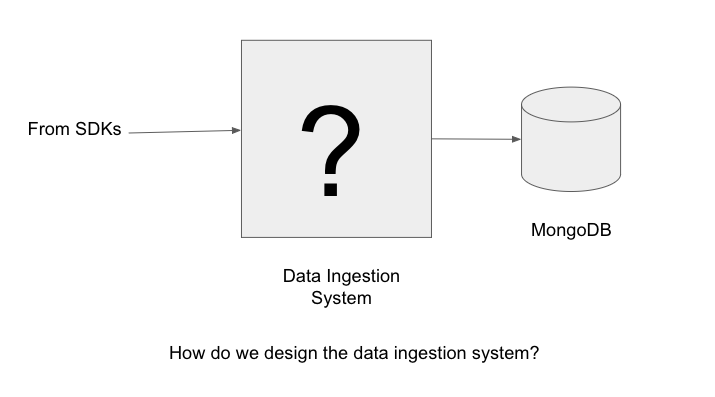
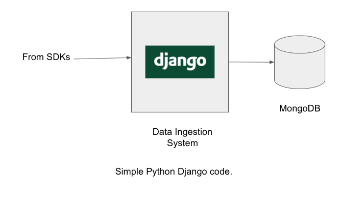
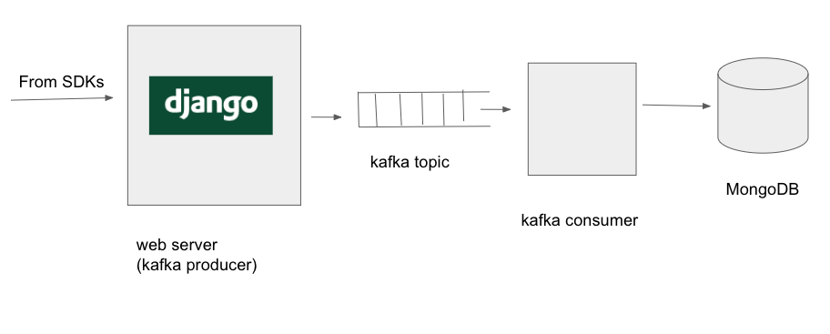
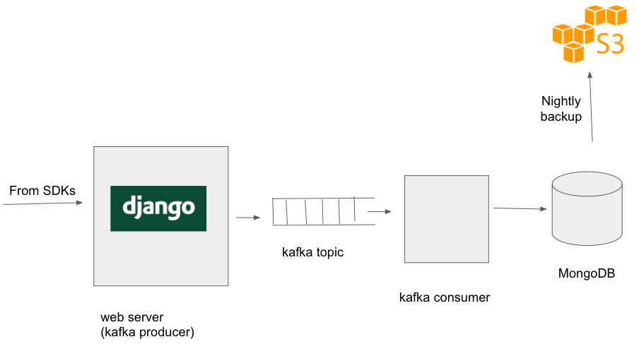
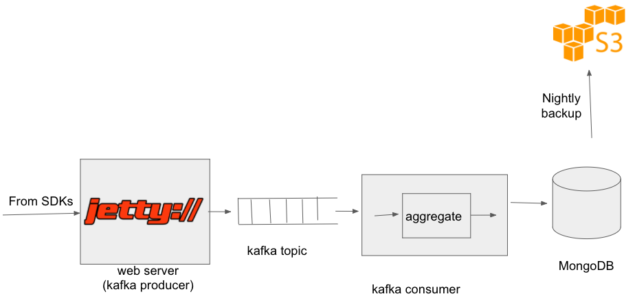
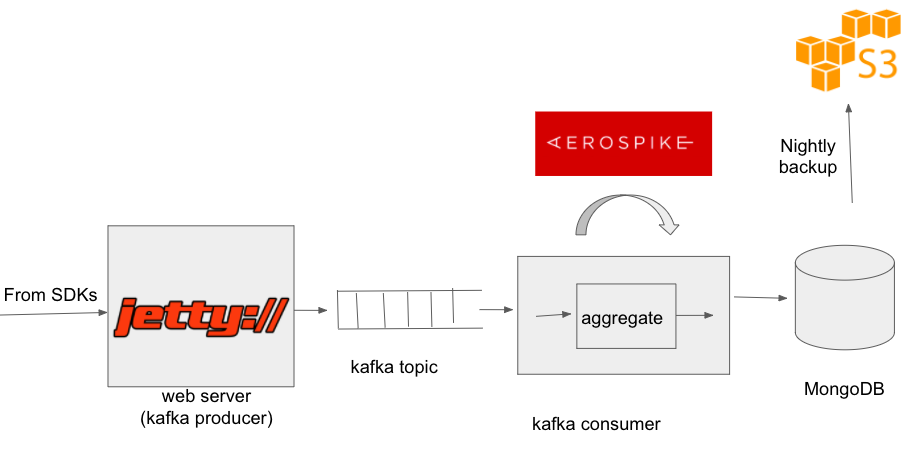
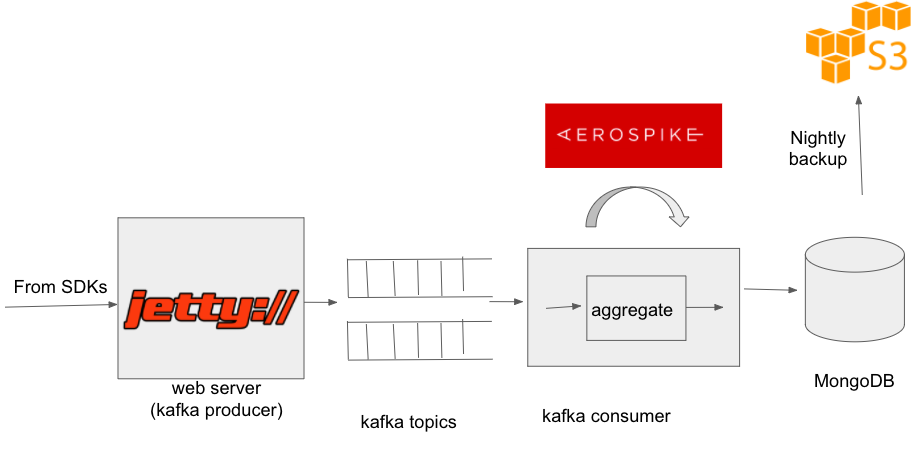

This article describes our experience at QGraph about high velocity data ingestion. It describes how we built version 1 of our data ingestion system (in a day), and how we evolved it over the next 2 years in response to increasingly high velocity of data. The actions we took look simple in retrospect, but they were not obvious when we were implementing them. There were many steps which we took, only to roll them back. If you think we are missing some basic ideas for the improvement, kindly contact me.
Various of QGraph SDKs (for android, iOS and web) send semi structured data about the users to QGraph web servers. Data is sent in JSON format via HTTP POST requests. Data is typically small in size: usually smaller than 1KB, though sometimes it can go as high as 20KB. We want the data to be available for use for other systems within a matter of seconds.
A typical POST body looks like this:
{
"userId": 123123123123,
"appId": 63adf2dadf2d344,
"name": "Vivek Pandey",
"hobbies": ["Chess", "Mathematics", "Algorithms"]
}
We decided the ingestion system needs to write this data to MongoDB1.
How do we design and implement a high performance and low cost architecture to achieve this?
What follows is the description of the process of iterative improvement that we followed for over an year to make ever improved data ingestion system.

We were just starting out and had no visibility into scaling issues that may arise in
future. We did not try to predict them either. We wrote a simple server in Django
REST framework, which connected to MongoDB on each request and fired a query to
store the data.
This served us well during initial testing, however things started to go bad as soon as the rubber hit the road, i.e. the first client went live.

We saw that in times of peak load, data ingestion was not working properly: it was taking too long to connect to MongoDB and requests were timing out. This was leading to data loss.
This is a common problem: During high load, all the components in the chain are stressed, and the one of the component gives in. One could make the weakest link stronger, but one can do better: introduce a buffer before the weakest component.
Since in our case, it was the MongoDB which was unable to ingest data fast enough, we decided to put a messaging queue before MongoDB system. Enter Kafka.
Why Kafka? Well Google searches led us to believe this is the tool most suitable for our purposes. And we also felt that the fact that we use Kafka will make prospective employees to want to us to join us.
Hah.
So, now, the webserver wrote data to kafka topics. And we wrote a kafka consumer which read the data from the kafka topic and wrote it MongoDB. So, the architecture now looked like the following:
Why is writing to kafka better than writing to MongoDB? It is because when you are writing to kafka, you are writing to the end of a file, which is hightly efficient. Unlike MongoDB (or any database), there are no indexes to be maintained, no degragmentations to be compacted, and no queries to be answered. Produces produce and consumers consumer, that is all.
Now, at the times of peak loads, requests get stored in Kafka while the consumer, limited by the MongoDB, processes them. Thus, at peak time, it takes a few minutes before the data gets to MongoDB. However, it is fine, because these peaks themselves last only a few seconds or minutes, and occur only a few times a day.
We spent some time in choosing optimal settings for kakfa. In particular, we set the batch size, maximum latency and compression as per our needs.
OK. This is fairly basic. We were not using connection pooling so far. For each update to the database, a connection was opened, request was made and the connection was closed. We moved to connection pooling, and this led to slight decrease in CPU utilization of mongo machine, and a large decrease in the default mongo logging (which logs one line per connection open/close).
Once we had a few clients, we started worrying about data loss. What if the Mongo machine went down, never to come up again? Or else we somehow corrupted the data beyond repair? Or if, by mistake someone deleted an entire customer's database?
To guard against such occurrences, we started taking daily backups of our database to S3. As time went, daily backups became too heavy, and then we started daily incremental backups, i.e. we take backup of only that part of the data which is either new or modified. This is what the architecture looks like after this.
With using Kafka as a buffer between the web server and mongo machines, the system was quite stable. However, we were using a fleet of webservers, and thought we could bring down the fleet size by using Java as the language rather than Python. Python had helped us getting everything running quickly, but now we required more performance. Thankfully, the web server code was pretty straightforward: just read the post body, do some simple validations and put a message in a kafka topic. We chose Jetty as the framework of choice (partly because in my previous company people had worked on Jetty based web servers). As we had expected (and described in detail here), we reduced CPU utilization of our web servers drastically:

Now, our architecture looked like:
Things went fine for a few months, when we started facing a fresh problem. The problem was that periodically, kafka consumer was way (sometimes hours) behind the producer, i.e. we were unable to put data to MongoDB as the rate at which was arriving. Again, this happened when there was a spike in the incoming data rate. It usually happened when a large client sent push notifications to all their users. In that case a large number of users open the app within a small window of time, causing an increase in the event rate on our servers. Couple it with the fact that MongoDB could be getting queried by some other subsystems while it is ingesting data at a high rate. In such a situation, both the ingestion and the querying came to a standstill.
We could always move to mongo machines with more memory (so that more indexes could be in-memory), but turns out that there was a software solution to keep us going:
We realized that bulk operations to mongo were more performant that individual operations.
We wrote a module, called mongo query aggregator, which provide similar interface to other mongo drivers, but which aggregated the write queries and fired them to mongo either when threshold number of queries were collected or when a threshold amount of time (few hundres of milliseconds) had elapsed. This again reduced CPU utilization of mongo and mongo was able to ingestion spiked data in a graceful way.
After introducing query aggregator, our architecture looked like this:
We released our mongo query aggregator on github. You can access it here To install it, simply run
pip install moquagon your system
As you may have noticed till now: MongoDB has been continually the weak point all along. That is expected, since MongoDB is a busy system: on the one hand it is ingesting data in realtime, on the other hand it is being queried by dozens of other subsystems. Thus, a large part of the effort is around reducing the laod to MongoDB. We have done a lot of work around reducing the readread query workload of MongoDB, but that is a separate topic.
A few months after the previous change, as the ingestion rate and query rate increased again we started having the kafka lag problems again: at times, consumer would be behind the producer by as much as a few hours. Incidence of such problems rose from infrequent (once every four weeks) to mildly frequent (once a week). At the time of large read queries, the ingestion system would be too slow and it would take a lot of time for data to reach from kafka to MongoDB.
Fortunately, we had a weapon to attack this problem. That weapon is the CS engineers' favorite weapon: Caching.

We realized that a lot of data that we were getting was repeated data. For a given user, we got his profile information as many times as he did some action. The profile information that we got contained information like the name, email or the city of the user. This information tends to change very slowly, but we wrote it to MongoDB repeatedly. To reduce the query rate to MongoDB, we put an aerospike cache in front of MongoDB. As we write some information to MongoDB, we also wrote it to aerospike. However, before writing info to MongoDB, we checked in aerospike if the same information was present already. If yes, we did not bother to write the information in MongoDB. This optimization reduced the MongoDB queries by around 60%.
Along the way we also realized that not all data is equal. For some types of data it was important to get it to MongoDB as soon as possible. Other type of data could wait. Thus, we started from putting data in two different queues from the producer. When there was delay in getting data to Mongo, we could shutdown the consumption of lower priority queue, thus ensuring that high priority data reaches mongo on time. Once the peak traffic was over, we would start consuming the lower priority queue.
This is data ingestion story till now. Our system continues to evolve.
Following are some action items we can take up in future to further optimize our data ingestion system
Data ingestion system began with a simple 30 line django code, and by now it has expanded to thousands of lines of code, with multiple systems running on various machines. When we began we did not know how the system will evolve, and we did not try to predict the problems that would happen. However, we kept our eyes and ears open and solved the problem as they came.
Footnotes
1. Yes, I know MongoDB can lose data. I know I should use MySQL. Thanks for your concern.